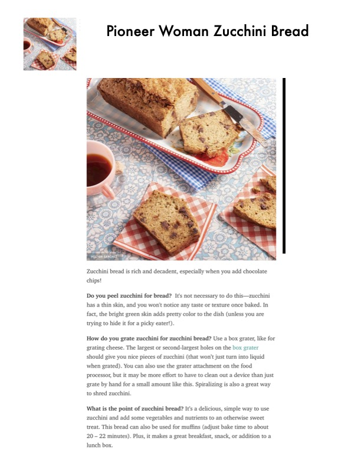

Pioneer Woman Zucchini Bread

Original cookbook page 206
Zucchini bread is rich and decadent, especially when you add chocolate chips!
Prep: 15 minutes • Cook: 55-60 minutes • Total: 1 hour 15 minutes
Ingredients
- Butter or cooking spray, for greasing pan
- 1 3/4 c. all-purpose flour
- 3/4 tsp. baking powder
- 3/4 tsp. baking soda
- 1/2 tsp. kosher salt
- 1 tsp. ground cinnamon
- 3/4 c. dark or semi-sweet chocolate chips, optional
- 2 large eggs
- 1/3 c. vegetable oil
- 1/2 c. light brown sugar, packed
- 2/3 c. granulated sugar
- 2 tsp. vanilla extract
- 1 1/2 c. shredded zucchini, packed
- 2 tbsp. coarse sugar
Instructions
- Preheat the oven to 350°. Butter or spray the inside of a 9-by-5-inch loaf pan.
- In a medium bowl, whisk together the flour, baking powder, baking soda, salt, and cinnamon. Stir in the chocolate chips (if using).
- In another medium bowl, whisk together the eggs, oil, brown and granulated sugars, and vanilla. Stir in the zucchini. Add the wet ingredients into the dry ingredients and mix just until combined.
- Transfer the mixture to the prepared loaf pan. Sprinkle the top all over with the coarse sugar. Bake 55-60 minutes, until slight crumbs remain on a toothpick when stuck into the middle of the loaf. Let cool for 10 minutes in the pan, then remove and let cool completely on a wire rack before slicing. Cover and store leftover the bread at room temperature for up to 3-4 days or in the refrigerator for up to 1 week.
📝 Recipe Notes
You can substitute 3/4 cup of chopped, toasted walnuts for the chocolate chips and ½ cup whole wheat flour for some of the all-purpose flour. This version makes a fulfilling breakfast bread! Tips: Don't peel zucchini - the thin skin adds color and won't affect taste. Use box grater or food processor to grate. Can also be made into muffins (bake 20-22 minutes).
Recipe #206 from collection